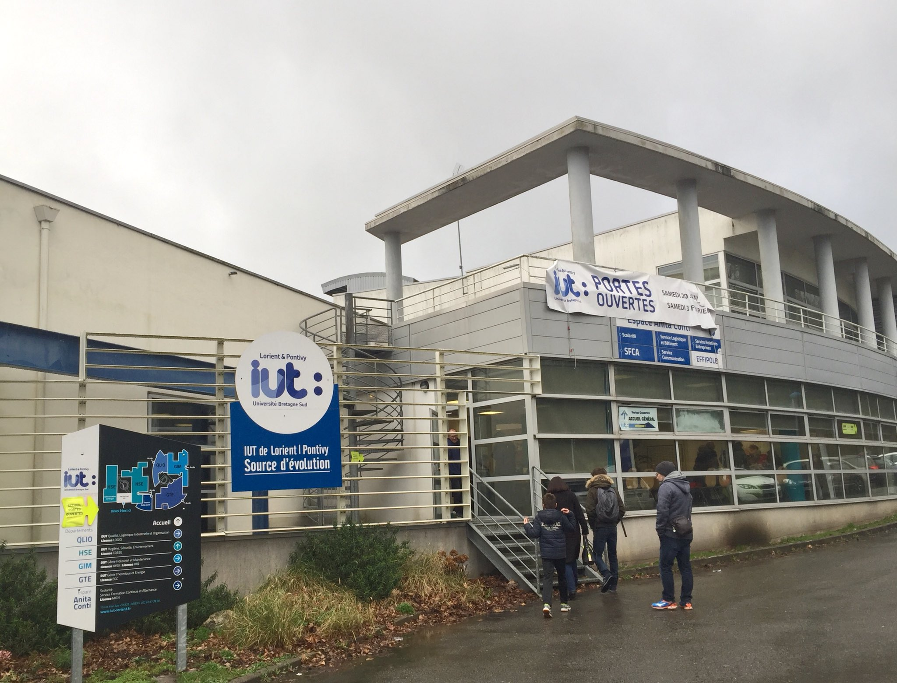
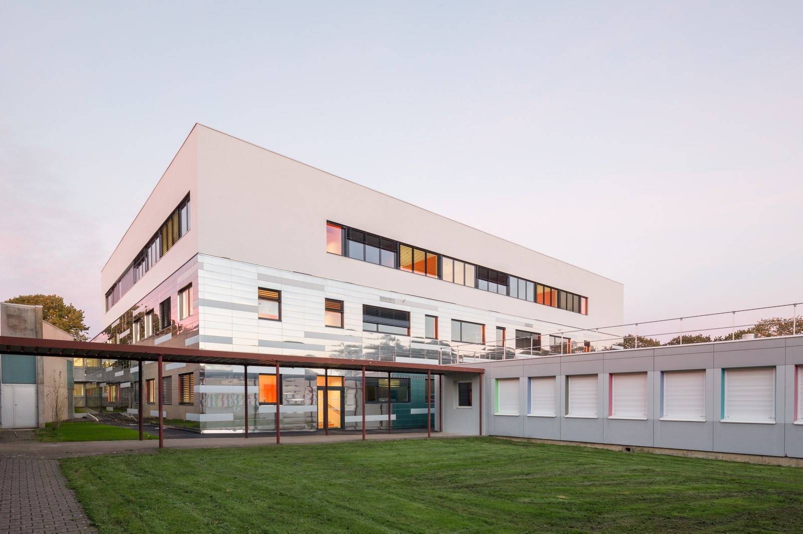
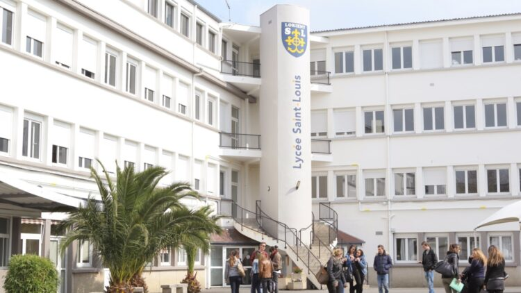
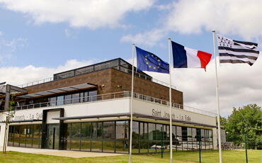

Diplôme d'ingénieur en GI 4.0
Depuis septembre 2024 - ENSIBS (en alternance depuis septembre 2024)
Spécialité : Génie Industriel 4.0

BUT Qualité Logistique Industrielle et Organisation
Depuis septembre 2021 - IUT de Lorient (en alternance depuis septembre 2022)
Parcours MPBS : Management de la Production de Biens et de Services
Préparation DUT Mesures Physiques
2020 - IUT de Saint-Nazaire
Baccalauréat Technologique
2019 - Sciences et Technologies de Laboratoire option Sciences Physiques et Chimiques en Laboratoire
Lycée Saint-Louis - La Paix, Lorient
Baccalauréat Technologique
2019 - Sciences et Technologies de l'industrie et du développement durable option Innovation Technologique et Eco-Conception
Lycée Saint-Joseph La Salle, Lorient
